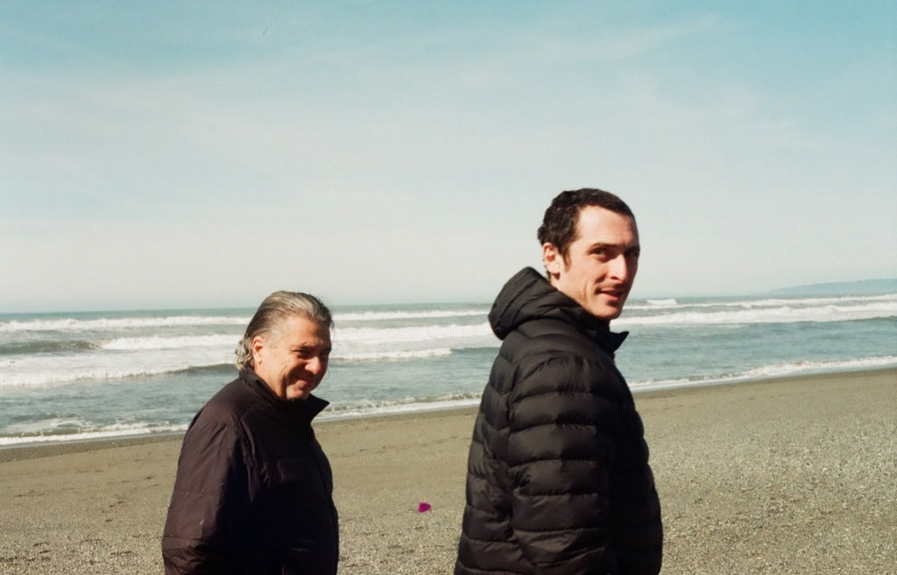

Company
Building the memory layer for frontier serving
FractiSI is pre-revenue. We ship software that sits next to the inference stacks already running—and recovers capacity those stacks leave on the floor.
What FractiSI is
Tiny Footprint is infrastructure software for AI memory efficiency. It installs beside existing serving. Shared organizational state is stored once; per-session difference stays compact; the working set is reconstructed on demand. Operators get more concurrent work from the GPUs and DRAM they already bought—without a rip-and-replace.
We publish open source. Community Workstation is free. Repositories and papers are public. Server and Cloud are the commercial path once the product earns a place in production.
Where we come from
FractiSI is the company spun from FractiAI’s research program—years of public empirical labs on holographic rhyme, Infinite Octaves architecture, and Tiny Gateway. That work produced a pinned engine paper and a runnable kit. FractiSI exists to take the strongest result out of the lab and into the market: a product operators can install, measure, and pilot under real scarcity of HBM, DRAM, and accelerator hours.
We are not a consulting wrapper on someone else’s stack. We are not a closed research boutique. We are a product company with a public research spine and a clear commercial seat still open.
Founders

Pru Mendez founded FractiAI and leads product direction, systems audits, and the public research program that produced Tiny Gateway and Tiny Footprint. The technical founder seat stays on invention, architecture, and proof.
Daniel Ari Friedman, Ph.D. co-founded FractiAI and leads systems integration and verification—keeping public claims aligned with what the stack can actually demonstrate.
We are hiring a Founding CEO to build the company around that invention: go-to-market, fundraising, design partners, and the first production pilots. That commercial seat is not filled by renaming a scientist.
What we are building now
Now: Workstation 0.1—the free local kit—so any team can clone, benchmark, and refute on their own hardware. Public papers and receipts stay attached to every claim.
Next: design-partner pilots on Server-class fleets; joint measurement on partner silicon closer to production HBM; and the commercial packaging that turns a verified memory win into a contract.
Then: Cloud / OEM paths for platforms that want the same engine at hyperscale terms. We do not pretend those fleets are already live under contract. We take the bottleneck as given—and that the companies who own the layer next to inference will matter while it lasts.
Read the Tiny Gateway paper. Lab and simulation numbers shape the thesis. They are not a CapEx guarantee.
Write
Product, validation, investment, and commercial interest: one inbox.
valetpru@gmail.com · Product · Recruit · Workstation
Pre-revenue. FractiSI sells a path to measure and deploy Tiny Footprint—not finished physics, not a clinical device, not a guarantee of fleet savings. Equity and commercial terms are negotiated with serious counterparts only.